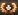

De: La Frikipedia, la enciclopedia extremadamente seria.
De: La Frikipedia, la enciclopedia extremadamente seria. De: La Frikipedia, la enciclopedia extremadamente seria.
«¡Puto Loltraktor!»
~ Hitler viendo que el tanque inicial alemán es una mierda
«Oh, no, me han volado el tanque»
~ N00b jugando por primera vez con el Medium I
«Joder, lo que me espera»
~ Cualquiera esperando a que se termine de descargar por segunda vez el W.o.T.
«Tanque nuestro que estas en el campo, Santificado sea tu blindaje, Venga a nosotros tu Tier, Hagase tu destruccion, en mapas de verano como de invierno, Danos hoy nuestro X2 de cada dia, Perdona nuestra mala punteria, Asi como nosotros perdonamos a los que usan Artilleria, No nos dejes caer en un Bug del mapa,Y libranos de todo Lag. Let’s Roll»
~ un super pro Noob rezando un Tanquenuestro
World of Tanks (en español Mundo de Tanques) es un juego de estrategia y shooter sin historia, es decir que solamente disfrutas haciendo mierda el tanque enemigo. Hay tantos tanques como células en tu cuerpo, y te lo voy a demostrar. Se le pueden cambiar piezas a tu tanque.
Como en este juego los creadores sí que sabían de tanques, así que decidieron hacer 5 tipos de tanque, que son representados con un signo, a la vez:
Cuando tienes todo desbloqueado en un tanque, significa que ese tanque es Élite y que tu tripulación aprenderá mas rápido por que el cañón de tu tanque, es mas grande. (vaina estúpida)
Te eliges un tanque, el cual tienes que ser bueno o que le cojas el rabo el tranquillo. Bueno, le das a Batalla, y te saldrá la pantalla de espera. La mierda es que no sabes a qué mapa vas a ir, así que prepárate un tanque universal como los mandos. En la batalla procura ir con alguien porque si no te violarán te matarán. SE trata de destruir todos los tanques o capturar la bandera, son 15 vs 15, pero a veces hay retrasados que no juegan, inactivos. Normalmente sueles ganar perder. Y tu premio de consolació es de 1 Exp. y 1 Creditos.
U.S.A.
La rama gringa es la que más usan los Noobs jugadores de WoT (como también se le conoce a este juego) ya que tiene todo estándar, blindaje, cañones, movilidad, capacidad para joder la paciencia... todo lo que necesita un noob para agarrarle el truco a este juego. Muchos de sus tanques tienen unas torretas tan duras que ni el pelón de Brazzer puede penetrarlos y los que saben jugarlos se aprovecharan de esta ventaja para romperte los huevos.
Alemania
See...los Cabrones Nazis están de vuelta en este juego de la segunda guerra mundial (¿obvio no?) y veremos desde el poderoso tanque Tiger(no tan poderoso en este juego) y el más prolifero
Panzerkampfwagen 4 puto trabalenguas más conocido como Pz 4 (imaginarte nombrarlo por su nombre a cada rato...), son taques lentos como el Internet Explorer pero más precisos que Chuck Norris con su revólver, lo utilizan los Pseudo-Nazis.
Unión Soviética
¿Se acuerdan cuando Rusia era mala? Bueno, menos malos que ahora... Pues bien, los soviéticos tienen los mejores tanques de este juego hecho por rusos.
Estos taques en Tier bajos son bastante rápidos y blandos, pero después del Tier V tienen de todo, buen blindaje, velocidad y sus cañones te arrancan la suficiente vida como para que empieces a maldecir a la madre que los pario, pero son más ciegos que un topo y no tienen tanta precisión como los Nazis Alemanes, sin embargo siguen siendo tanques jodidamente buenos.
Reino Unido
Los británicos también están en este juego, y no vinieron solo a tomar té con pudin (qué gays), estos tanques se caracterizan por ser más lentos que la justicia de tú país, pero luego Los tier 5 son..eh...bueno aun son lentos, pero están fuertemente blindados, aunque no vale mucho el blindaje ya que si te agarran por la espalda te violan matan. Mantente alerta para que no te pase o en su defecto, lleva un frasco de vaselina,así duele menos.ya los Tier altos se vuelven tanques decentes y divertidos competitivos de jugar.
Francia
Por supuesto, los Franceses tienen que estar presentes en este juego de la II GM como si hubiesen hecho algo muy importante los muy maricas, sus tanques se caracterizan en un principio por ser lentos y muy blindados, normalmente cuesta matarlos, pero luego del Tier VIII liberan su verdadera naturaleza en el juego como en la vida real, correr, y correr muy rápido (xD), son los tanques más móviles y rompehuevos y hasta destructivos del juego , ya que poseen cañones Auto-Loader, cañones que tardan bastante en cargar pero que cuando están cargados, disparan todas las balas en menos de 10 segundos, dejándote encabronado con la vida o muerto.
China
Estos tanques son lógicamente copias de los demás, fin. tan deleznables son muy rápidos,ligeros y jodidamente pequeños,lo que hace muy difíciles darles pero,tampoco importa mucho ya que tienen un blindaje íntegramente hecho de bambú podrido defecado por pandas con severos problemas de coprofagia,y que al soplarles de frente te cargas a la tripulación,el motor y las suspensiones,tienen cañones que disparan bolas de arroz que no penetran ni una plancha de cartón de 2cm a medio metro.La mayoría de los tanques chinos son,como no, imitaciones de tanques de otras ramas con ligeras mejoras(¿que por que hacen esto? pues fácil porque son chinos y les viene de nacimiento plagiar objetos de cualquier tipo ya que no tienen ni pizca de imaginación ni ganas de ponerse a pensar).Estos tanques los usan en su inmensa mayoría(97,9%)los N00BS,(que creen que por ser chinos son la hostia,pero en realidad son todos una mierda) que salen al centro del campo a hacerse los monguers los héroes y al final los violan matan.
Menudos gilipollas. Click para mayor tamaño.
Chuck Norris juega al WoT.
Autor(es):